Getting Started
Launching the Application
Step 1: Open the Application
macOS: Open Applications folder → Double-click the app
The main window will appear with two tabs: Matching and Dynamite
Main Interface Overview
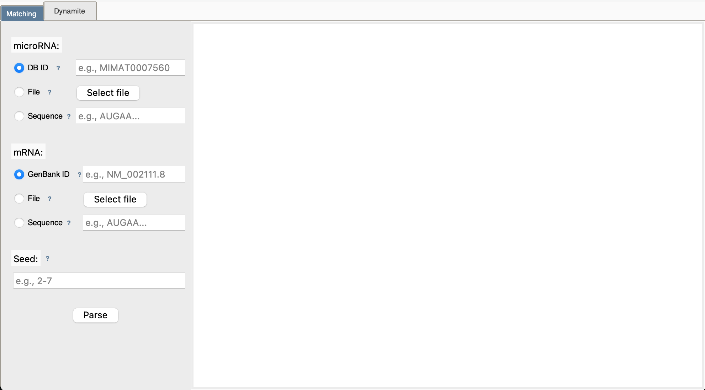
Understanding Input Modes
Each input field (microRNA, mRNA, Seed) supports three entry methods. You'll see radio buttons to choose:
🔘 Mode 1: Database ID
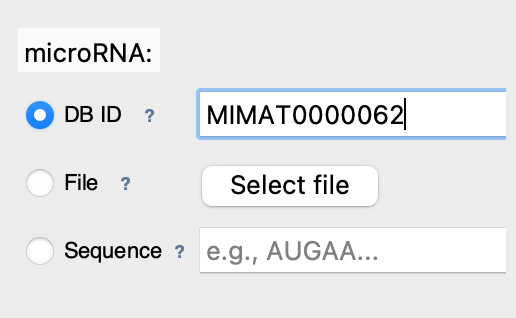
What it does: Fetches sequence directly from online database
Best for: Quick access to known sequences
Examples:
- microRNA IDs: MIMAT0000062 (mmu-let-7a)
- mRNA IDs: NM_000546.6 (TP53 gene)
📁 Mode 2: File Upload
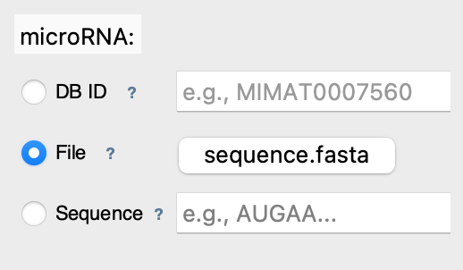
What it does: Reads sequence from your computer
Best for: Local data, custom sequences
Supported formats:
- FASTA: .fa, .fasta (plain sequence)
- GenBank: .gb, .gbk (annotated sequence)
✏️ Mode 3: Direct Sequence
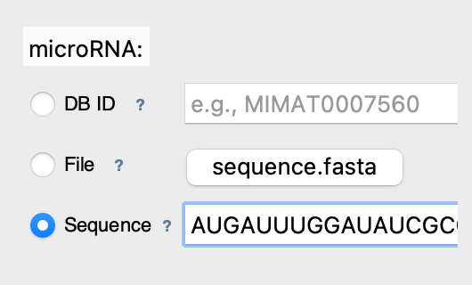
What it does: Analyzes text you type directly
Best for: Quick tests, short sequences
Notes: Whitespace is ignored, auto-converted to uppercase
Choosing Your Analysis Mode
📍 Use MATCHING Mode When:
- You have a specific microRNA in mind
- You want to know if it binds to your target mRNA
- You need detailed alignment visualization
- You're validating a known interaction
✅ Speed: Instant (< 1 second)
✅ Output: Detailed alignments + statistics
🔍 Use DYNAMITE Mode When:
- You want to discover which microRNAs bind your mRNA
- You have a target gene but unknown regulators
- You need to see all possible microRNA candidates
- You're doing exploratory research
⏱️ Speed: ~1-5 minutes (scans the 48,860 microRNAs of the miRBase DataBase)
✅ Output: Ranked list of potential binders
Your First Analysis: Matching Mode
Step 1: Select microRNA
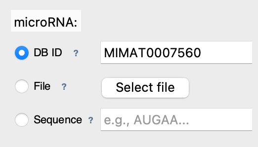
Enter microRNA ID: MIMAT0007560 (mmu-mir-30a)
Step 2: Select mRNA
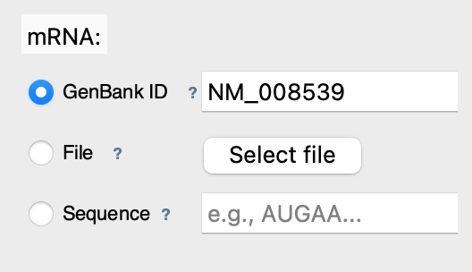
Enter mRNA GenBank ID: NM_008539 (mouse SMAD1)
Step 3: Set Seed Region
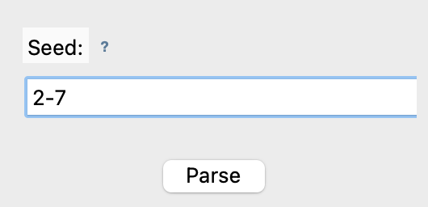
This is the standard seed region - usually 2-7 or 2-8
Step 4: Run Analysis
Click [Parse] button and wait for results
Step 5: View Results
Results appear in the right panel showing: - Number of binding sites found - Position of each site in mRNA - Base pairing visualization - Statistics (Watson-Crick pairs, wobble pairs)
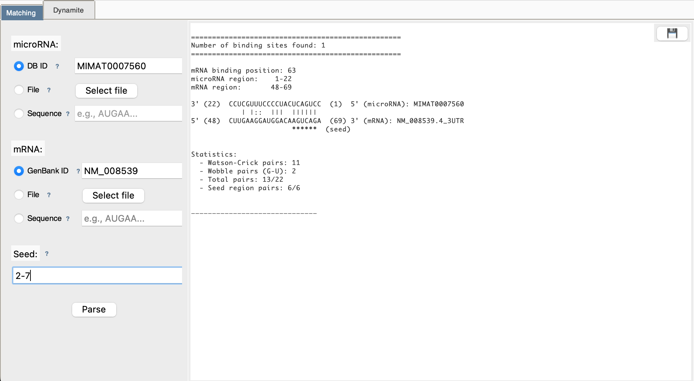
Step 6: Download (Optional)
Click 💾 button to save results to a text file
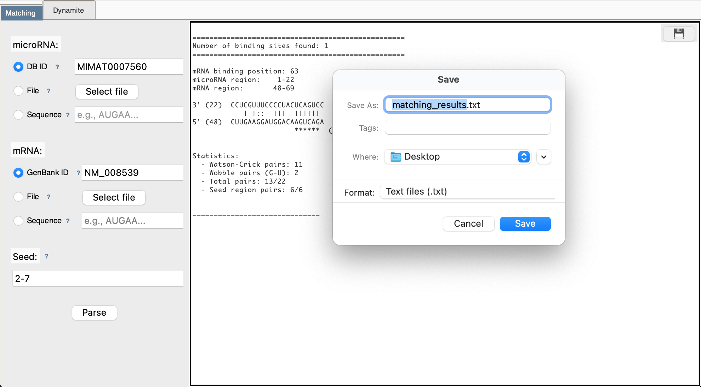
Your First Analysis: Dynamite Mode
Step 1: Select mRNA
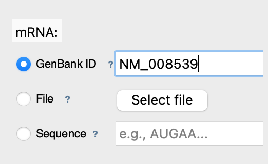
Enter mRNA GenBank ID: NM_008539 (mouse SMAD1)
Step 2: Set Seed Region
Step 3: Run Scan
Click [Parse] button
Step 4: Wait for Results
A progress popup shows:
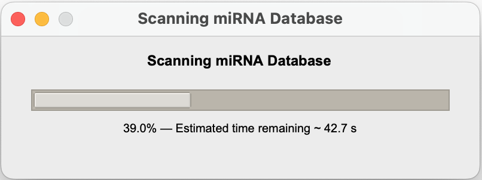
Step 5: View Results Table
After scanning completes, you see a table:
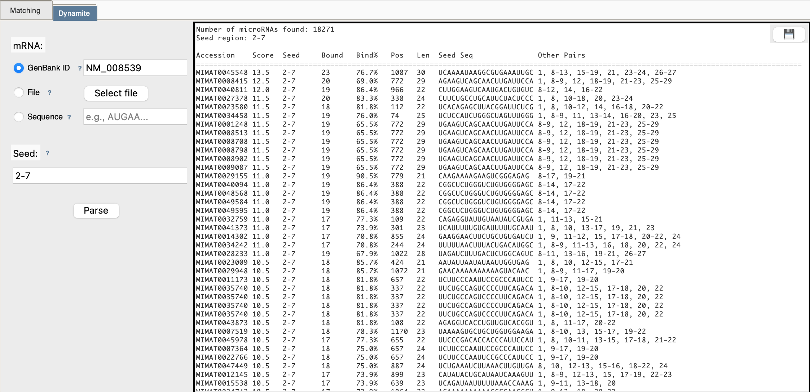
Step 6: Download
Click 💾 to export the complete table
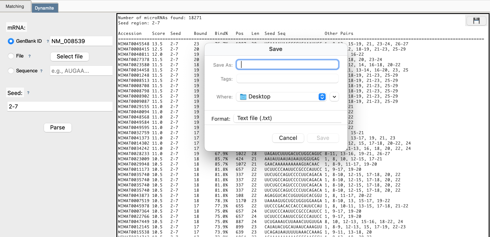
Key Concepts to Remember
🧬 What is a "Seed Region"?
The seed region (typically positions 2-7 of the microRNA) is the most critical for binding. In this tool: - Positions are 1-indexed (position 1 is the first nucleotide) - Typical range: 2-7 (most important for binding) - Alternative: 2-8 (more stringent) - This region MUST match perfectly for a binding site to be detected
📊 What Do the Results Mean?
- Position: Where in the mRNA the binding site starts (1-indexed)
- Watson-Crick Pairs: Normal, strong base pairings (A-U, C-G)
- Wobble Pairs: Special G-U pairings (weaker but still valid)
- Bind%: Percentage of microRNA that pairs with mRNA
- Score: Total pairing strength (higher = better binding)
🔄 DNA vs RNA
- The tool automatically converts DNA (with T) to RNA (with U)
- You can paste either format - it will be handled correctly
Next Steps
- 👉 Learn the biology behind the analysis
- 👉 Deep dive into Matching Mode
- 👉 Explore Dynamite Mode